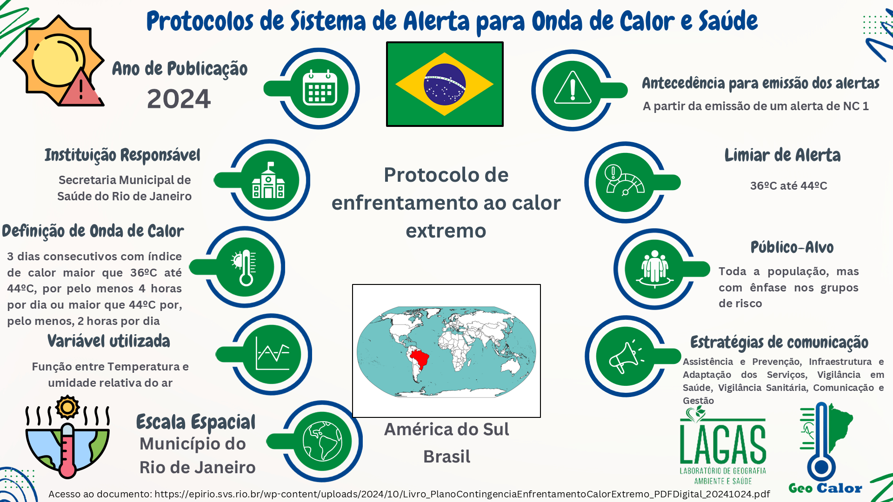
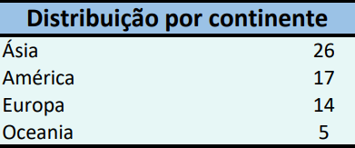
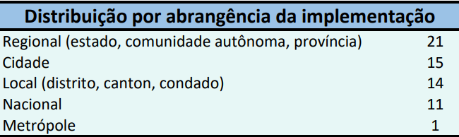
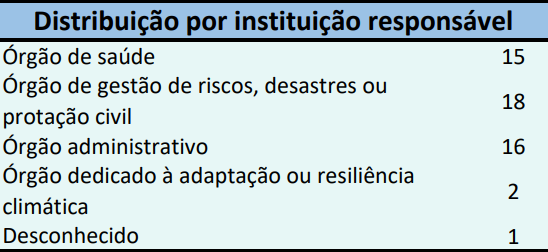
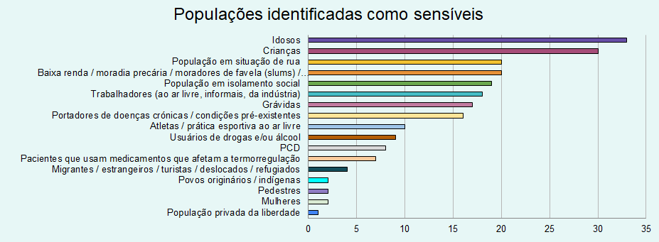

Sistemas de alerta de ondas de calor e saúde pelo mundo
Com a ideia de apoiar o Ministério da Saúde no desenvolvimento de um sistema próprio, nós revisamos em grande detalhe alguns dos principais e mais consolidados sistemas de alerta para ondas de calor e saúde. A partir da leitura dos documentos diretamente ou de artigos que falam sobre esses documentos, construímos os infográficos abaixo resumindo nossos principais achados.

Após essa primeira revisão mais detalhada, com o decorrer do nosso projeto, atualizamos a revisão para englobar novos sistemas que foram elaboados em 2025. Você pode ver uma síntese do que descobrimos no mapa e nas figuras abaixo!
Sem dúvidas a Índia é o pais de maior destaque no que diz respeito a sistemas de alerta de ondas de calor e saúde, com 23 documentos identificados. Isso é fruto de um esforço do governo nacional em conjunto com os estaduais de desenvolver plano s de ação espacíficos para cada localidade. No Brasil também identificamos dois planos locais, para os municípios do Rio de Janeiro e de São paulo. Há também o Plano Clima nacional, mas esse documento não entrou na nossa revisão. Nos Estados Unidos também identificam-se esforços locais de criação de documentos, promovidos por agências e governos estadutais e/ou municipais. Outros países como Austrália, Canadá, Espanha e Portugal possuem mais de um documento, mas a maioria possui apenas um plano nacional. Para acessar links e mais informações dos documentos que analisamos, você pode clicar aqui!
Ao total, foram identificados 63 documentos, oriundos de 18 países diferentes. A maior parte dos documentos veio da Ásia, Europa e América do Norte, com destaque para a Índia, que possui uma diretriz nacional e indicativo que os municípios devem fazer seu próprio sistema de alerta, gerando um alto número de protocolos.

Identificamos que a maioria dos protocolos tem abrangência regional ou local, com um número menor de sistemas nacionais. Portanto, acreditamos que, para o sucesso dessa empreitada, é necessário que surjam sistemas loco-regionais, ainda que haja uma diretiva nacional e apoio do Ministério da Saúde.

Além disso, faz sentido o Ministério da Saúde e as Secretarias Estaduais de Saúde serem responsáveis pela elaboração do sistema, visto que, em maioria, os protocolos são elaborados pelo órgão de saúde. Ainda assim, pela diversidade apresentada, acreditamos ser fulcrala colaboração entre diferentes órgãos.

Outros pontos importantes identificados nos protocolos revisados são as populações de risco indicadas pelos protocolos. Como esperado, idosos e crianças aparecem de forma muito frequente. Além disso, foi interessante notar que uma quantidade considerável de protocolos indicam atletas ou pessoas realizando prática desportiva ao livre, bem como usuários de drogas como populações sob maior risco.
